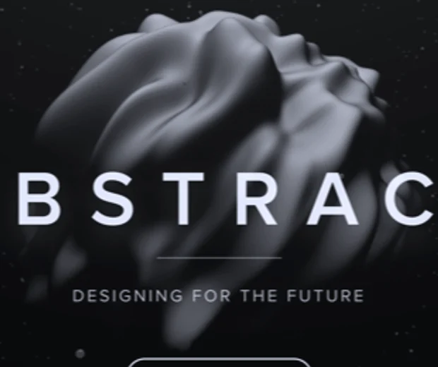

ABSTRACT
DESIGNING FOR THE FUTURE
Technical Architecture & Performance SLA
Engineered with zero-dependency ES6 modules, hardware-accelerated transform compositing, and sub-16ms frame budgets across desktop and mobile viewports.
Accessibility & Multi-Device Resilience
Verified across 1440px, 820px, 375px, and 320px viewports with keyboard focus rings, ARIA landmarks, and offline asset fallbacks.
Commercial Deployment & Customization Matrix
Ready for instant static hosting with tokenized CSS custom properties, semantic markup, and comprehensive 10-step buyer documentation.